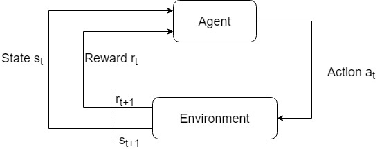
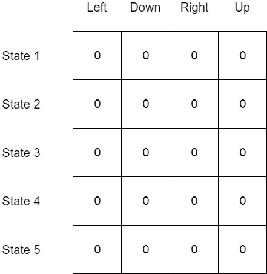

Q Learning
Table of Contents
Quick Refresher on Reinforcement Learning
Before I explain what Q Learning is, I will quickly explain the basic principle of reinforcement learning.
Reinforcement learning is a category of machine learning algorithms where the systems learn on their own by interacting with the environment.

The idea is that a reward is provided to the agent if the action it takes is correct. Otherwise, some penalty is assigned to discourage the action. It is similar to how we train dogs to perform tricks - give it a snack for successfully doing a roll and rebuke it for dirtying your carpet.
What makes it different from unsupervised learning is that in unsupervised learning, data such as purchase history of all the users is provided to the algorithm. The task of the unsupervised learning algorithm is to find patterns in the data which can help in cross-selling and upselling. Reinforcement learning is like handing a person a new game and saying, "Take this new game, here are the keys you can press, try getting the maximum points". The player then first explores the game figuring out what can be done and what cannot, what leads to what, and what is the objective. After this, the player then easily sets out to achieve the highest score. Of course, a human player brings in previous knowledge but the above analogy is sufficient.
Reinforcement learning can be applied to various applications such as industry robots and autonomous cars but for the purpose of this article I am going to stick to games.
Q-Learning
Introducing the problem
One of the algorithms in reinforcement learning is Q-Learning. But before I explain it, I am going to introduce the problem which we are going to solve using it.
Consider this simple problem of navigating in a grid. The green square represents the goal and on reaching it, the player receives a reward of +1. The red squares are danger zones. On reaching it, the player (represented by the cyan circle) dies.
Why don't you give it a try? Use W,A,S,D to move.
Remember! for all the examples use R to reset.
Pretty easy right! In the example, winning gives +1 score and 0 for everything else.
Q Table
That was pretty easy of humans. But how can you get the algorithm to do it?
First, let me define a state. In the example state 1 is where the player starts. Then state 2 is on the right. Similarly, go row wise till state 9 on the top right.
We need a way for the algorithm to figure out how to go from the starting state (state 1) to the goal state (state 9). Let’s create a table with the states as rows and actions (Left, Right, Up, Down) as columns.

This table is called as Q-Table. Q is the quality of the action.
Okay! so now we have created a table but how do we fill it? We make the agent take actions of course. This is where exploration and exploitation come in. The idea is that we want the agent to take random actions in the beginning.
We define a term called as epsilon and set it to 1. Then, as the training progresses we reduce the value of epsilon to 0. Before taking an action, a random number between 0 and 1 is generated. this number is checked against the value of epsilon*.* If this number is lesser, the agent takes a random action and gets next state it reaches and the score on reaching that state. This is called exploration. As the training progresses the value of epsilon decreases and the probability of that random number being greater than epsilon increases. If that number is greater, then the Q-Table is referred. For the particular state that the agent is in, the Q-Value of all the actions is compared. The action with the largest Q-Value is selected. This, is essentially the best action to take from that state. This is called exploitation.
By exploration the agent learns about the environment and by exploitation the agent plays the best moves. This strategy is called the epsilon greedy strategy.
Updating the Q-Table
Now, how do we update the Q-Table?
The bellman equation for updating the Q-Table:
$$NewQ(s,a) = Q(s,a) + \alpha[R(s,a) + \gamma maxQ'(s',a') - Q(s,a)]$$
After taking some action(a) from a given state(s) the agent reaches a new state and gets a reward. Here, alpha is the learning rate. It controls the amount by which the Q-Value is updated. The gamma term is called the discount factor. It controls how much importance the agent places on distant rewards. If gamma = 0.1 then short-term rewards have more weight. If gamma = 0.9 then long term rewards are given preference. Gamma is usually less than 1 as we want to balance action selection between long-term and short-term rewards. Expected discounted future reward from a state and given action is represented by the formula: $$R_{t+1} + \gamma R_{t+2} + \gamma^2R_{t+3} + ... $$
Suppose that gamma = 0.9 and the expected reward at t+3 = 100, t+2 = 1 and the next time step (t+1) = 50. The expected discounted future reward then becomes,
$$50 + 0.91 + 0.9^2100 = 131$$
This expected reward helps select the best action to take from the current time step.
Algorithm
Let's put it all together and create our agent.
Pseudo-code for Q-Learning Agent
Initialize the Q-table # set all entries to 0
Initialize epsilon to 1 # we want to explore initially
For 1 to Max_episodes do: # 1 episode is 1 round of a game. We want to train for several rounds
For 1 to Max_Steps do: # 1 step is 1 move. Limiting the steps ensures that the agent does not move back and forth in one spot
Pick a random number 0 & 1
if number > epsilon: refer q table for action with max q-value
else: take a random action
get next_state, reward and isAlive? from the environment
NewQ(s,a) = Q(s,a) + aplha[R(s,a) + gamma*max(Q'(s',a')) - Q(s,a)]
state = next_state
if not isAlive: go to 3
else: go to 4
reduce epsilon
Go to 3.
You can see our agent training in the demo below. Initially, the agent takes random actions. As the training reaches its end, you can see the agent take only the actions which lead it to the goal state. Press R to restart training.
I have made a few changes in the example. First, the agent receives a penalty of -1 at each step so that it learns to find the solution in the least possible moves. And second, the agent receives a penalty of -100 when it reaches the red square. This is to ensure that it learns to avoid the red squares.
The example below allows you to step through manually. Press W, A, S, D to move and see the Q-Table updating. You can always restart using R.
You can grab the support code from Github.
Thanks for reading 😎